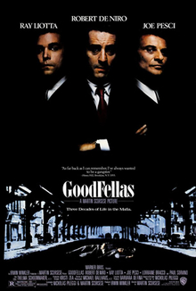

films1
films1
Filme
Fünfzehn Actionfilme für einen guten Abend
Fünfzehn Actionfilme für einen guten Abend, ausgewählt mit IMDb-Bewertungen ab 7,0/10.
Veröffentlicht: 2026-09-07 · IMDb 7.0+Artikel lesenSwiftChannels Blog
films1
Fünfzehn Actionfilme für einen guten Abend, ausgewählt mit IMDb-Bewertungen ab 7,0/10.
Veröffentlicht: 2026-09-07 · IMDb 7.0+Artikel lesen films2
films2
Thriller, die immer noch funktionieren, ausgewählt mit IMDb-Bewertungen ab 7,0/10.
Veröffentlicht: 2026-09-09 · IMDb 7.0+Artikel lesen
films3Kriminalfilme für einen Abend am Stück, ausgewählt mit IMDb-Bewertungen ab 7,0/10.
Veröffentlicht: 2026-09-11 · IMDb 7.0+Artikel lesen